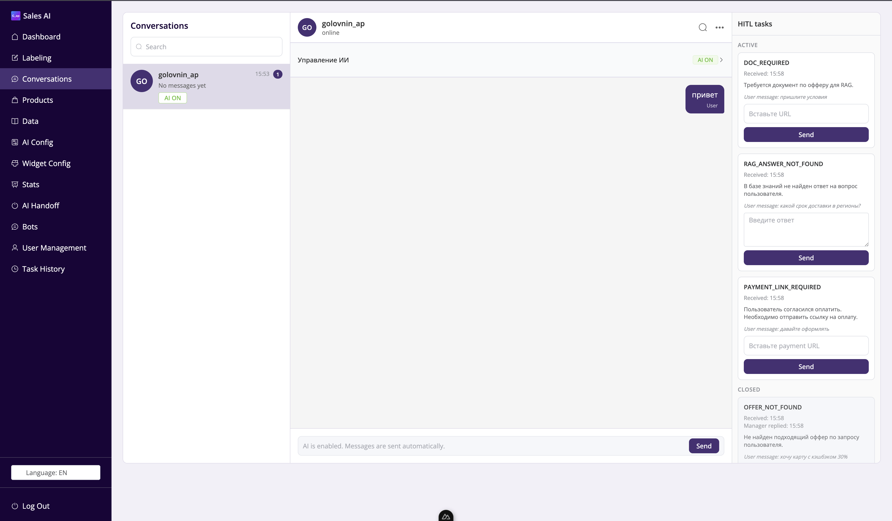

AI-продавец для автоматизации входящих обращений
AI-система для обработки входящих обращений и ведения клиента по воронке продаж: от первичной квалификации до подбора оффера, обработки возражений, передачи менеджеру или финализации.
Цель проекта — повысить эффективность отдела продаж: ускорить ответы, сократить время первичной квалификации, сохранить контекст диалога и помочь менеджеру работать только с ситуациями, где действительно нужно участие человека.
Что было реализовано
- Спроектировал AI-систему как управляемый диалоговый контур, а не обычного чат-бота.
- Выделил стадии воронки: lead, qualification, offer, finalize.
- Разработал state-модель для хранения этапа диалога, пользовательских слотов, флагов, контекста, истории действий и служебных статусов.
- Спроектировал маршрутизацию входящих сообщений: интерпретация текста, выделение сигнала, выбор сценария, вызов AI-логики или RAG-слоя.
- Подготовил RAG-слой для ответов на фактические вопросы, продуктовые сценарии и обработку возражений.
- Реализовал HITL-контур для ситуаций, где агенту нужны документы, ссылка, подтверждение менеджера или ручное решение.
Что показано на скриншоте
На скриншоте показан интерфейс тестирования AI-продавца. Слева расположена панель управления системой: диалоги, товары, данные, AI-конфигурация, статистика, handoff и история задач. В центре отображается активная переписка с пользователем. Справа находится блок HITL tasks, где тестировались сценарии выставления задач человеку: запрос документа через RAG, отсутствие ответа в базе знаний, необходимость отправить ссылку на оплату и ситуация, когда подходящий оффер не найден.
Такой HITL-механизм важен для production-логики: агент не должен пытаться закрыть все случаи самостоятельно. Если не хватает данных или требуется ручное решение, система создаёт задачу менеджеру и сохраняет прозрачность процесса.
Моя зона ответственности
Проектирование логики воронки, state-модели, маршрутизации сообщений, обработки пользовательских сигналов, RAG-слоя и тестирование MVP на реальных переписках. В ходе тестирования я выявлял сбои в маршрутизации, проверял работу узлов, дорабатывал промпты и улучшал устойчивость ответов.
